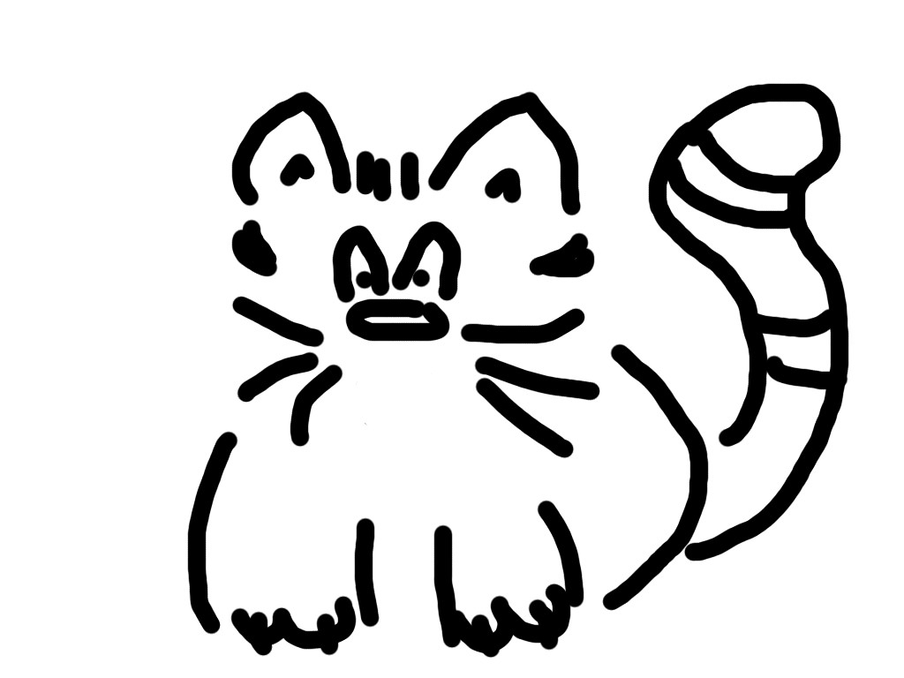
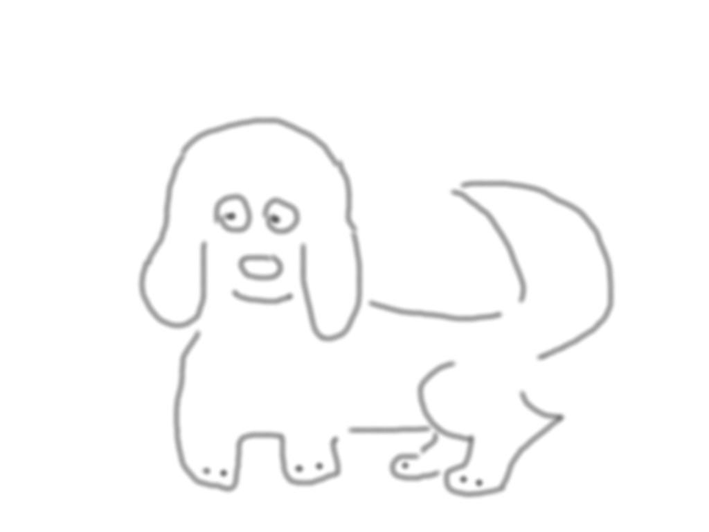

<!doctype html>
<html>
  <head>
    <link href="js/jspsych/css/jspsych.css" rel="stylesheet" type="text/css"></link>
  </head>
  <body>


  </body>
  <script src="https://code.jquery.com/jquery-2.1.4.min.js"></script>
  <script src="js/jspsych/jspsych.js"></script>
  <script src="js/jspsych/plugins/jspsych-text.js"></script>
  <script src="js/jspsych/plugins/jspsych-single-stim.js"></script>
  <script>
    function getAverageResponseTime() {
	var trials = jsPsych.data.getTrialsOfType('single-stim');
	// this is a test
	
        var sum_rt = 0;
	var valid_trial_count = 0;
	for (var i = 0; i < trials.length; i++) {
	    if (trials[i].response == 'go' && trials[i].rt > -1) {
		sum_rt += trials[i].rt;
		valid_trial_count++;
	    }
	}
	return Math.floor(sum_rt / valid_trial_count);
    }


    jQuery("document").ready(function() {

	var post_trial_gap = function() {
	    return Math.floor( Math.random() * 1500 ) + 750;
	}
	
	var welcome_block = {
	    type: "text",
	    text: "Welcome to \"Find the Cat\". Press any key to begin."
	};

	var instructions_block = {
	    type: "text",
	    text: "<p>In this experiment, an animal will appear in the center " +
		"of the screen.</p><p>If the animal is a <strong>cat</strong>, " +
		"press the letter F on the keyboard as fast as you can.</p>" +
		"<p>If the animal is a <strong>dog</strong>, do not press " +
		"any key.</p>" +
		"<div class='left center-content'></img>" +
		"<p class='small'><strong>Press the F key</strong></p></div>" +
		"<div class='right center-content'></img>" +
		"<p class='small'><strong>Do not press a key</strong></p></div>" +
		"<p>Press any key to begin.</p>",
	    timing_post_trial: 2000
	};
	var debrief_block = {
	    type: "text",
	    text: function() {
		return "<p>Your average response time was <strong>" +
		    getAverageResponseTime() + "ms</strong>. Press " +
		    "any key to view the data we acquired during this experiment. Thank you!</p>";
	    }
	};

        var test_stimuli = [ { image: 'img/dog.jpg', data: { response: 'no-go' } },
                             { image: 'img/cat.jpg', data: { response: 'go' } } ];
	
        var all_trials = jsPsych.randomization.repeat(test_stimuli, 10, true);

	// we need to interleave the fixation cross with each stimulus (see https://groups.google.com/forum/#!topic/jspsych/QNF-N7YKrPY)
	var experiment = [];
	experiment.push(welcome_block);
	experiment.push(instructions_block);

	for (var i = 0; i < all_trials.image.length; i++) {
	    var t = post_trial_gap();
  	    var fixation = {
	       type: 'single-stim',
	       stimuli: ['<div style="font-size: 72pt;"><center>+</center></div>'],
	       is_html: true,
	       choices: 'none',
	       timing_post_trial: 0,
	       timing_stim: [t],
               timing_response: t
   	    };
	    var trial = {
		type: 'single-stim',
		stimuli: all_trials.image[i],
  	        data: all_trials.data[i],
	        choices: ['F'],
	        timing_response: 1500
	    };
            experiment.push(fixation);			
            experiment.push(trial);
        }

	experiment.push(debrief_block);

	jsPsych.init({
	    experiment_structure: experiment,
	    on_finish: function() {
		jsPsych.data.displayData();
	    }
	});
    });
  </script>
</html>
